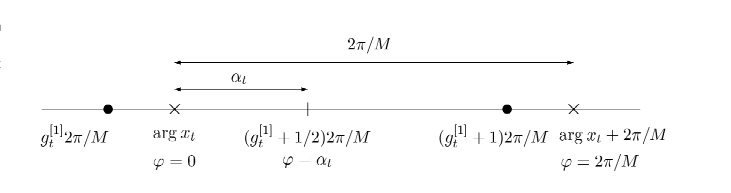

Fast Block Noncoherent Decoding
Wim Sweldens

Abstract:
We present a fast algorithm for exact maximum
likelihood multi-symbol noncoherent PSK decoding. While the standard
algorithm is exponential in the rate and the block length, our
algorithm is rate independent and linear-logarithmic in the block
length.
Status:
IEEE Comm. Letter, Vol. 5, Nr. 4, 2001.
Dates:
| April 2001:
|
Published.
| June 2000:
|
| Initial posting & submission.
|
Download: PDF v3.0 (.pdf) (68K).